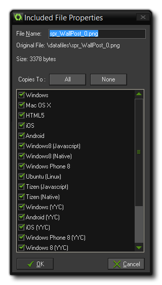

GameMaker: Studio is not just limited to the resources
that you create within the program as it has a special section on
the resource tree of the main window for Included Files.
Here you can load different file types (and even create
sub-directories for them) into GameMaker: Studio and they
will then be included in the final game as part of the final
package for the target platform. So, for example, in a windows game
they will be bundled within the *.exe and exported when
run, or in HTML5 they will be included in the html5_game
folder and stored on the server.
To add a file to your resources you must right-click on the
Included Files section of the resource tree and select
Create Included File or, if you want to create a
sub-directory to store other files, Create Group. This will
then prompt you to add a file, or files if your select more than
one, to the list. Once it has been added you can right-click on it
and select "Properties" to edit the properties of the file:
 Here you can
rename the file if you choose by changing the File Name.
Beneath the file name there are also a series of options for the
target platform that this included file should be copied to. If you
wish it to be only exported when you run the game in a
browser, then you would only tick the "HTML5" box, and if you want
it to be exported only to Android and iOS targets you would tick
those, and so on. If you choose not to tick any targets then
that file will not be exported at all. This option is especially
useful for those that wish to make use of the Configurations Manager to store
certain configurations and export specific files depending on them.
Note that you can select all targets or none of them simply by
clicking the buttons in the properties window.
Once you click on "OK" the file will be stored with your current
project in its own folder called data-files found in the
project *.gmx directory. If you have chosen to change the
name of the file when you added it to the resource tree, then the
file will now be stored with that new name. Please note that from
now on you should edit the files stored in this folder and
not the original files (unless you plan on including them
again, but generally there is no need).